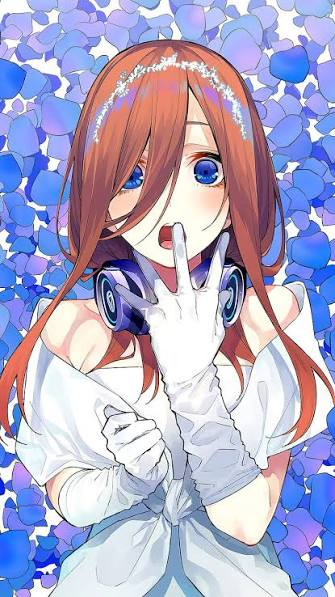
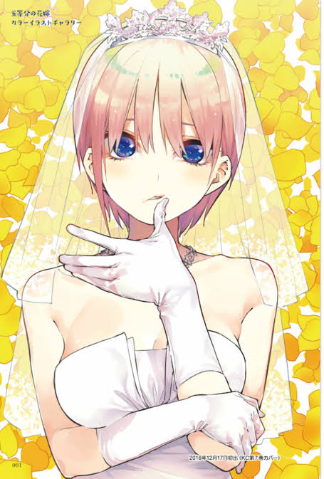
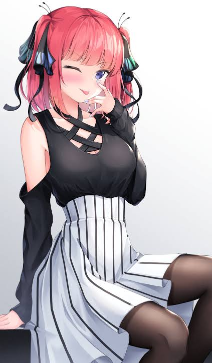
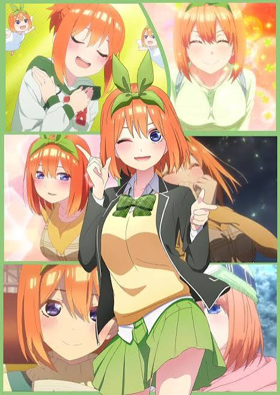
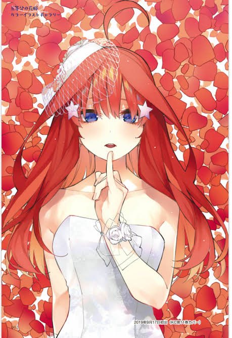

01
Presentazione
L'anime racconta la vita del protagonista e il rapporto con le cinque sorelle Nakano, in una storia fatta di crescita, coccole e momenti divertenti.

Una storia di crescita, legami familiari e sfide quotidiane, raccontata attraverso cinque personalità uniche che trasformano ogni momento in un’esperienza speciale.
La sua calma, la sua sensibilità e il modo in cui osserva tutto con attenzione la rendono una delle sorelle più affascinanti del gruppo: introspettiva, elegante e profondamente autentica.

L'anime racconta la vita del protagonista e il rapporto con le cinque sorelle Nakano, in una storia fatta di crescita, coccole e momenti divertenti.
Riservata, appassionata di storia e molto riflessiva, con un carattere tranquillo ma profondo.
La sorella maggiore, elegante, naturale e sempre in grado di lasciare un'impressione forte.
Determinata e protettiva, ha un carattere forte e un lato affettuoso che emerge sempre.
Luminosissima, energica e spontanea, porta sempre allegria e calore in ogni situazione.
Seria, precisa e ben organizzata, con una forza interiore solida e determinata.

La Maggiore
Elegante, sicura e naturale. La sorella che tutti cercano.
"Fidati di me."
Scopri di più →
La Protettrice
Decisa, protettiva e sempre pronta a guidare.
"Ti proteggerò."
Scopri di più →La Studiosa
Riservata ma profondamente sensibile e interessante.
"Penso a tutto."
Scopri di più →
La Solare
Energica e piena di vita, porta allegria dovunque.
"Facciamo di tutto!"
Scopri di più →
La Seria
Determinata e studiosa, con forte senso del dovere.
"Non mi arrendo."
Scopri di più →Tutto inizia quando Futaro conosce le cinque sorelle Nakano e diventa il loro insegnante particolare.
Man mano che il tempo passa, si creano legami sempre più forti e momenti indimenticabili.
Ogni sorella affronta le proprie sfide personali, supportate da Futaro e dalle altre.
La storia si conclude con scelte difficili e un finale che cambierà tutto.
La vera magia del sito è la varietà di personalità: da Miku riservata a Yotsuba solare, da Ichika elegante a Nino protettiva, fino a Itsuki seria e determinata.
Un attimo che cambia tutto e fa scoprire la vera energia del gruppo.
L’estetica scura e morbida rende ogni pagina più elegante e cinematografica.